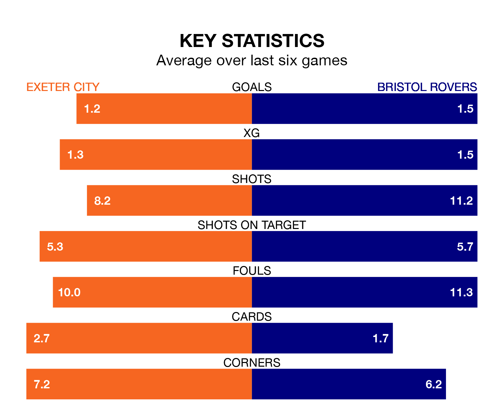

Bristol Rovers travel to Exeter City on Saturday in EFL League One.
The visitors come into the game on the back of a win in their last match, having beaten Oxford United 3-1 at home, with goals from Chris Martin, Luke Thomas and Harvey Vale.
Exeter also won their last match, 2-1 against Barnsley, with their goals scored by Jack Aitchison and Reece Cole.
In the last 10 years, Exeter and Rovers have played each other on nine occasions. Exeter won five of them, Rovers one, and they drew three times.
On average, Exeter scored 2.3 goals and the Gas 1.6 in those matches.
Their last meeting was on January 23, when Exeter won 1-0 away.
With 21 goals in 29 games so far this season, Exeter are the league's third-lowest scorers with 0.7 goals per game. And they are conceding more than average, letting in 40 goals at a rate of 1.4 per game.
Rovers, meanwhile, are above average scorers, with 1.4 goals per game, compared to a league average of 1.3. They have also conceded 1.4 goals per game.
In Viljami Sinisalo, City can rely on one of the league's safest pair of hands. He has kept 10 clean sheets in his 28 appearances this season in EFL League One.
In the Gas's net, Matthew Cox has three clean sheets in 27 games. He has conceded a goal every 71 minutes, only slightly more often than the 74 minutes between goals for Sinisalo.
The home team are in mixed form in EFL League One, with three wins and a draw from their last six games.
With two wins and four losses over that period, the visitors' form is worse – they have taken six points from 18, compared to Exeter's 10.
Exeter are 15th in the table after 29 games, of which they have won nine and drawn six, earning 33 points.
Rovers are three places ahead of City in 12th, with 10 wins and seven draws putting them on 37 points.
Saturday's match will be refereed by Will Finnie, who has taken charge of 12 EFL League One games so far this season, issuing one red card and booking 43 players. He has awarded two penalties.
The last Exeter game Finnie refereed was a 2-1 home win against Reading on August 26. His last Rovers match was their 1-1 draw at home against Leyton Orient on November 28.
Updated: 15:45 (UTC), 02/02/24